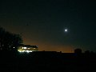
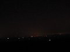
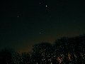

New camera, new functions... I've never had a camera before where you can adjust the time the shutter stays open for. So I had to go and play. Shame it's winter and very cold, but it did make for a really clear sky and I'm pleased with what I learnt.
Unfortunately I didn't have a chance to change the settings on the camera much between shots (as I couldn't feel my fingertips any more) so I need to go and play another night - when it's a bit warmer!
(3 images.)| 
Pub and moon | 
View over Brighton | 
Trees and Orion |